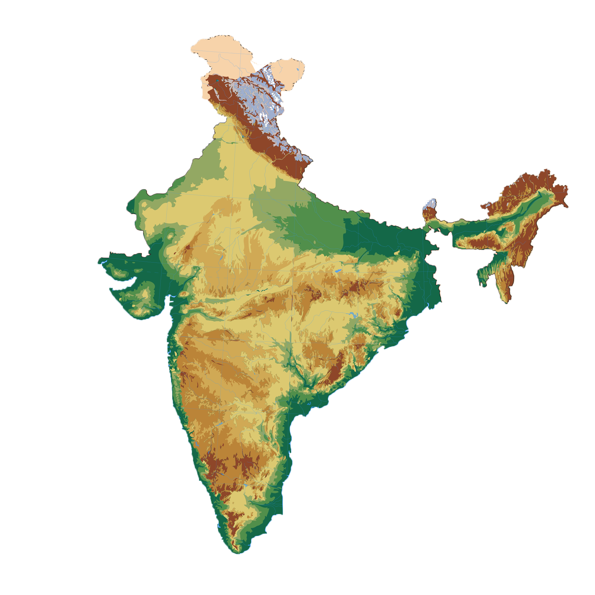

Info on the team and our motivation

Western ghats

Located on the western side of the Indian peninsula,
the western ghats primarily consist of tropical evergreen forests.
These areas have high rainfall and a short dry season.
A few examples of trees which can be planted in this region are:
| Saraca Asoca |
| Santalum album |
| Phyllanthus emblica |
Eastern ghats
Located on the eastern side of the Indian Peninsula,
the eastern ghats consist mainly of tropical deciduous forests. On the basis of the availability of water,
these forests are further divided into moist and dry deciduous.
A few examples of trees which can be planted in this region are:
| Acacia donald |
| Cordia domestica |
| Bridelia cinerascens |
Deccan plateau
A triangular landmass lying between the Eastern and Western Ghats, the Deccan Plateau mainly consists of dry deciduous forests.
Some trees that can be found in this region are:
| Hardwickia binata |
| Tectona grandis |
| Boswelia serrata |
Central plains
The part of the Peninsular Plateau that lies to the north of the Narmada river, these mostly consist of dry deciduous forests.
Trees that can be found in this region consist of:
| Shorea robusta |
| Terminalia arjuna |
| Morus alba |
Lakshadweep
| Musa Paradisiaca |
| Drumstic moringakkai (Moringa Oleifera) |
| Artocarpus altilis |
Andaman and Nicobar Islands
| Pterocarpus macrocarpus |
| Hevea brasiliensis |
| Cocos nucifera |